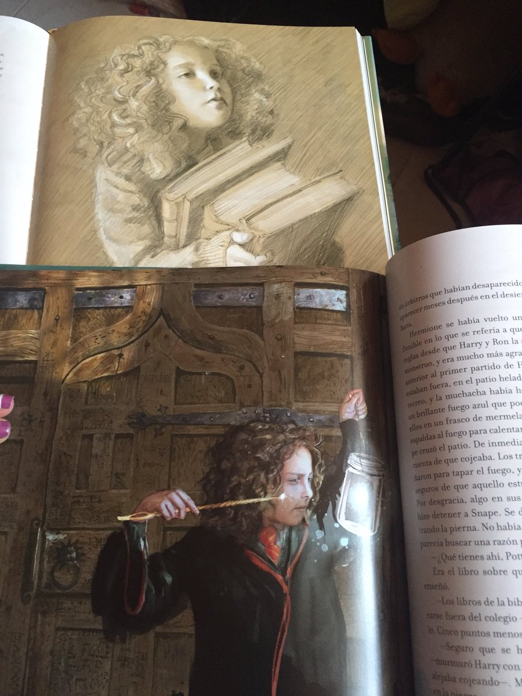

Hermione Jean Granger es un personaje de ficción y una de los tres protagonistas principales de la serie de libros de Harry Potter, publicados por J. K. Rowling.
Aparece en la primera novela, Harry Potter y la piedra filosofal, como una nueva estudiante en su camino a Hogwarts. Después de que Harry y Ron la salvaron de un troll de montaña en los baños de las chicas, se formó una estrecha amistad entre ellos y con frecuencia usa su ingenio rápido, y conocimiento enciclopédico para ayudarlos.
Hermione es la chica más inteligente de su curso en el Colegio Hogwarts de Magia y Hechicería. Al igual que Harry y Ron pertenece a la casa de Gryffindor, pese a que el sombrero seleccionador consideró colocarla en Ravenclaw debido a sus prominentes capacidades intelectuales. Es de origen muggle: sus padres son ambos dentistas y no tienen ninguna relación con el mundo de los magos. Le encanta leer, sin embargo, no sabe dibujar. No le gusta romper las reglas salvo por alguna emergencia y no es especialmente entusiasta del quidditch, el deporte mágico, aunque apoya a sus amigos durante el campeonato. Tiende a creer que todo aquello que merece la pena saber se puede aprender de un libro y es escéptica respecto a todo lo que no se pueda comprobar con ciencia, despreciando, por tanto, la asignatura de adivinación impartida por la profesora Sybill Trelawney. Hermione conoció a Harry Potter y a Ron Weasley en el Expreso de Hogwarts.
Caracterización
Apariencia
Hermione tiene el pelo castaño claro, largo y enmarañado, un poco ondulado. Los ojos castaños, e incisivos bastante grandes (estos hasta su cuarto año). A pesar de que nunca destacó por su aspecto físico (de hecho, son varios los personajes que se han reído de ella por eso, destacando Draco Malfoy, Pansy Parkinson y Severus Snape), en cuarto año sufrió una gran transformación de cara a sus compañeros, también durante segundo año al intentar transformarse sin querer, mediante poción multijugos, en un gato.
Una de estas transformaciones fue la de sus dientes delanteros, más grandes de lo normal. Fue antes del baile de Navidad cuando, tras una pelea de Harry Potter con Draco Malfoy, en la cual sus hechizos rebotan en Goyle y Hermione, sus dientes crecieron descomunalmente, visitó la enfermería para que la Señora Pomfrey los devolviera a su tamaño natural. Sin embargo, cuando la enfermera le dijo que le indicara cuándo habían recuperado su tamaño original, esta dejó que se los disminuyera hasta dejárselos mucho mejor de lo que estaban, como bien apreciaron sus amigos.
Otro de los cambios fue el pelo, cuando, tras aplicarse una poción alisadora, aparece con él liso y brillante en el Baile de Navidad. De hecho, su aparición en el baile dejó a Ron, Harry, las gemelas Patil, Draco Malfoy, otros muchos compañeros, profesores y el Director de Hogwarts sorprendidos y con la boca abierta.
Personalidad
Su reputación, para la cual trabaja arduamente por mantener como una de las estudiantes más inteligentes de su año es causa de frecuentes burlas, aunque Ron y Harry dependen de ella para la ayuda académica, y su conocimiento y sentido común ha demostrado ser valioso para poder vencer los desafíos del trío a lo largo de la saga.
Hermione es valiente y leal y tiene una conciencia política brava, pero a veces tiene problemas en mantener una mente clara en los momentos más difíciles. Por ejemplo, la mentira improbable que le dice a la Profesora Umbridge para salvar a Harry en Harry Potter y la Orden del Fénix (ella reclama que hay un arma escondida en el bosque que fue creada bajo las órdenes del Profesor Dumbledore).
Sin duda, el intelecto de Hermione es fuerte en memoria y análisis objetivo, y a veces tiene dificultad cuando se le fuerza a hacer juicios repentinos: es por tanto una persona reflexiva y madura, clara y objetiva. Sin embargo, son los planes que ella arguye los que Harry y Ron siguen. Aunque ha cometido errores, lo que sugiere es usualmente el mejor plan de acción.
Aunque compasiva, Hermione puede ser ingenua y hasta insensible con las personas, a pesar de su posición aparentemente “sensible” del trío.
Habilidades mágicas
Al entrar en Hogwarts, Hermione destaca desde el principio por su inteligencia y sus impecables resultados en las clases. Incluso Snape, quien siente un gran desprecio por los alumnos de Gryffindor, reconoce sus respuestas como acertadas, aunque insinuando que "repite el libro como un papagayo". Además es la alumna, que, durante los cursos, más puntos gana por razones académicas.
El problema de Hermione es Defensa Contra las Artes Oscuras, pues, a pesar de que se le da bien, es la única asignatura en la que alguien destaca por encima de ella. En sexto también es superada por Harry en pociones, pues este se ayuda del libro del Príncipe. Hermione se enfada entonces con Harry por utilizar el libro, recordándole lo que ocurrió en segundo con Ginny y el diario de Tom Riddle.
Además, Hermione es la prefecta de Gryffindor, no solo por sus resultados académicos sino también por su compromiso con las normas.
A pesar de su actitud hacia los estudios, Hermione no lo duda un momento a la hora de abandonar Hogwarts para ir en busca de los Horrocruxes con Harry y Ron.